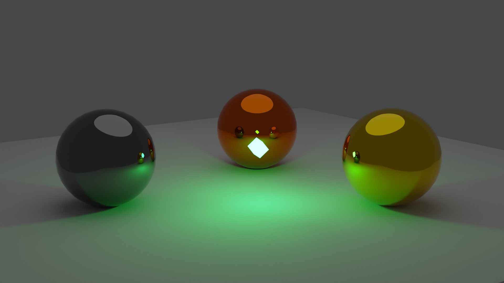
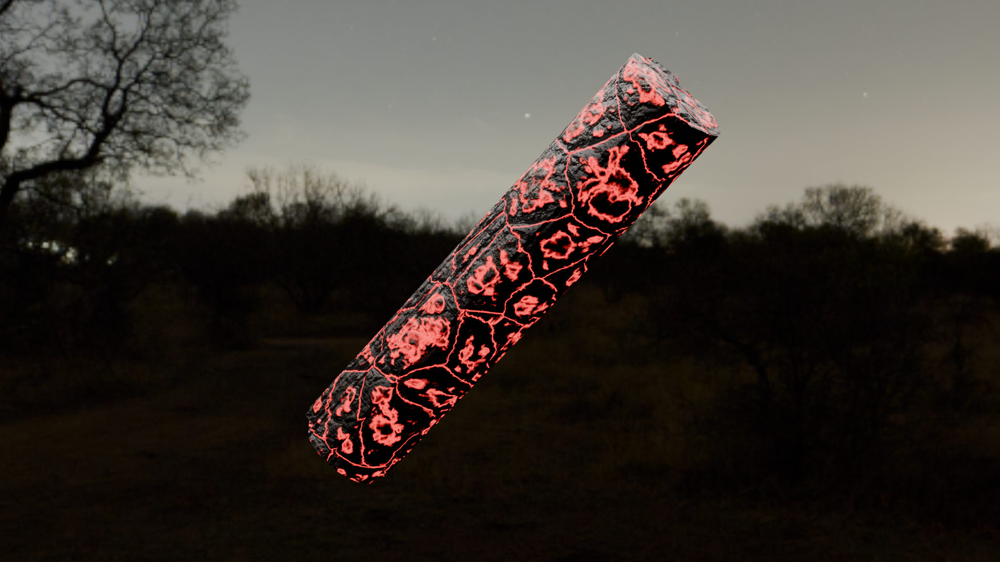
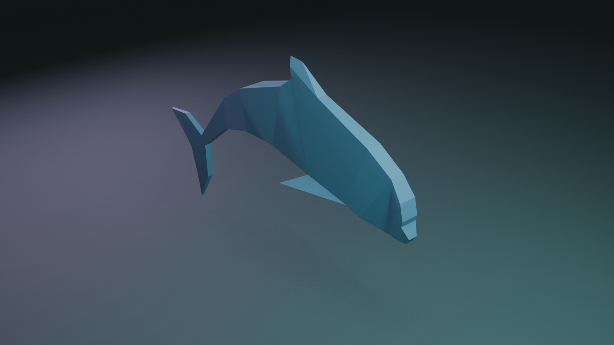

Projekti
Where the ice ends
Where the Ice Ends je 2D avanturistički side-scroller u kojem igrač preuzima ulogu malog pingvina Vostyja, koji potaknut unutarnjim porivom, koji ni sam ne razumije, napušta svoje jato i kreće na opasno putovanje prema misterioznoj planini.
Žanr igre je 2D platformer s elementima akcije i avanture.
Igra je namijenjena igračima starosti od 12 do 25 godina koji vole atmosferične igre s emotivnom pričom, ali je prikladna i za starije igrače.



Teksture u Blender-u
Jedan od prvih projekata gdje sam shvatio da mi je vizualni dio rada jednako zanimljiv kao i tehnički.
U Blenderu sam eksperimentirao s proceduralnim teksturama — materijalima koji se generiraju matematički, bez fotografija ili skeniranih resursa.
Privuklo me to što svaka tekstura počinje kao čista logika, čvorovi i matematičke funkcije, a završi kao nešto što izgleda opipljivo.
Kamen, metal, drvo, ili nešto što ne postoji u prirodi ali nekako djeluje uvjerljivo.

3D Modeliranje - Delfin
Drugi projekt u Blenderu, ovaj put modeliranje.
Odabrao sam delfina jer je oblik dovoljno složen da bude izazov, ali dovoljno prepoznatljiv da odmah vidiš kad nešto ne štima.
Naučio sam da je organsko modeliranje strpljiva stvar.
Svaka krivulja mora imati smisla, topologija mora pratiti oblik tijela, a detalji poput peraja i njuške izgledaju jednostavno dok ih ne pokušaš napraviti sam.